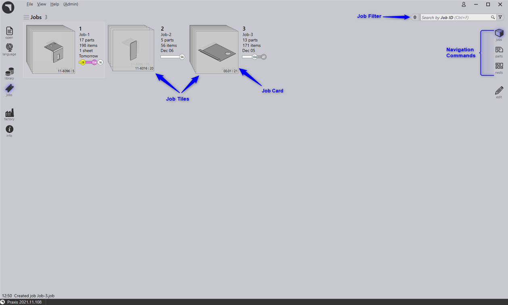
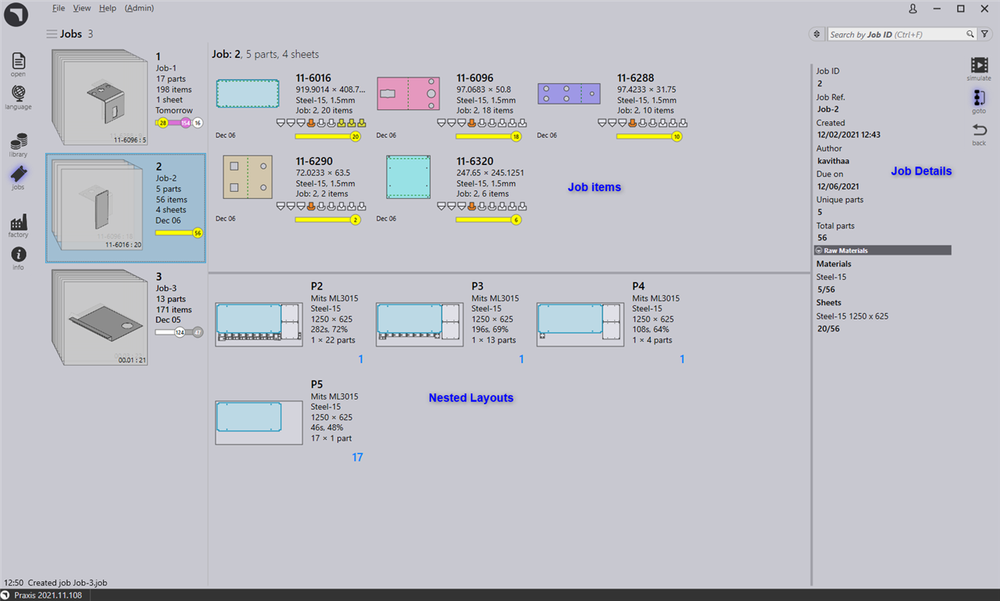

Praxis uses Jobs to capture and track customer orders. Typically, a job contains a collection of parts with varying quantities, due dates, priority and part order.
New jobs can be
● Imported from spreadsheets(csv, xlsx)
● Created from existing parts from the part library
● Drop parts directly into jobs page and manually provide job parameters
● From Assemblies.
● Jobs are displayed in tiles view where each job is displayed with a few basic properties like Job ID, Job reference, Customer name, Total parts etc.
● A job title also displays ordered parts and quantities as stacked cards. Parts within a job can be scrolled by rolling the mouse wheel over the cards.
● Jobs can be searched by Job ID, Customer and Job Reference via Search box.
● Double clicking a tile or pressing Enter key after selecting a tile changes the view into the detail mode.

● The details page displays the parts list along with the nested sheets (layouts) if any.
● Use Up/Down key to change the job being displayed in the details page.
● Rolling the mouse-wheel over the part-stack highlights the part in part list as well as in the layouts.
● Selecting a layout highlights the layout as well as all parts nested on the layout in the part list. The highlights automatically go off after a minute.
